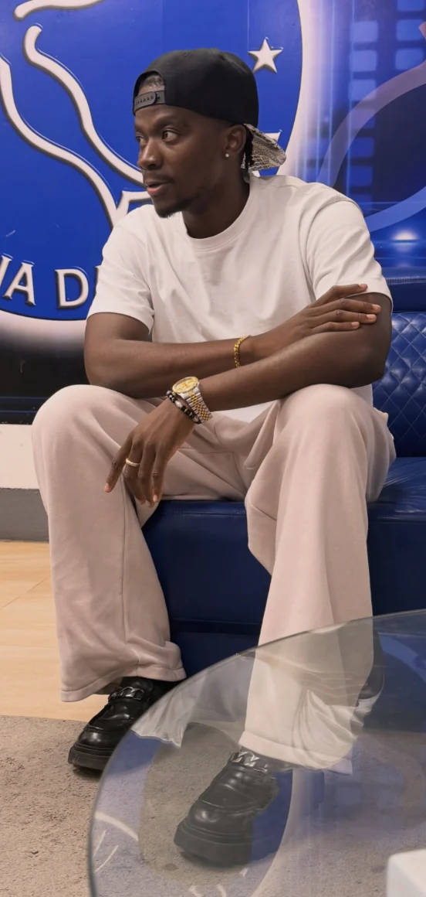

01 / SINGLE2026
VOU FAZER
MAIS COMO
03:23 / SINGLE

Jonaas é um artista cabo-verdiano radicado em Portugal. Duas geografias fazem parte da sua história. A música é o lugar onde se encontram.

JÁ DISPONÍVEL · SENTE CADA PALAVRA
Mais do universo de Jonaas.
Concertos, colaborações e novidades.
O próximo encontro começa aqui.